«Остров мечты» — крупнейший крытый тематический парк развлечений в Европе, включающий в себя торгово-развлекательный комплекс и ландшафтный парк с набережной. Находится в Нагатинской пойме, в районе Нагатинский Затон Южного административного округа Москвы. Открытие состоялось 29 февраля 2020 года.
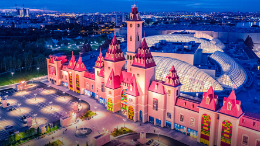 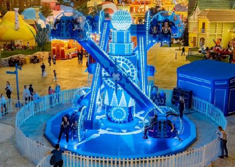 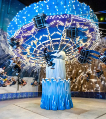 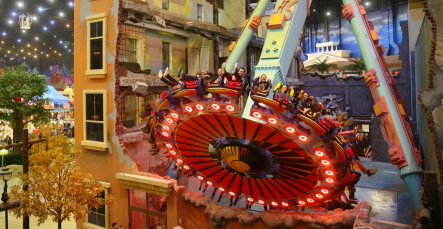 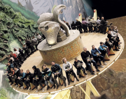 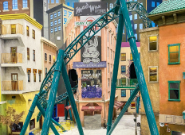 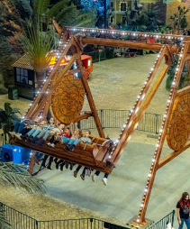Кремль — укреплённое ядро исторического русского города, центральная и наиболее древняя его часть. Слово «кремль» с XIV века получило распространение в Северо-Восточной Руси, постепенно заменив первоначальное название детинец[1]. В структуре древнерусских городов к обнесённому крепостной стеной кремлю-детинцу в большинстве случаев примыкали один или два более крупных по площади окольных города, которые также были укреплены[2]. Неукреплённые части города назывались посадами.
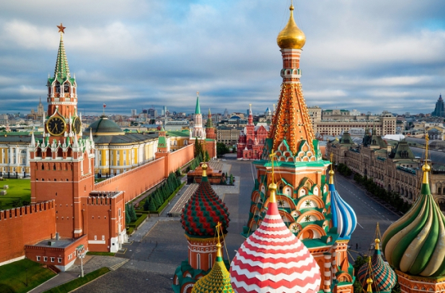 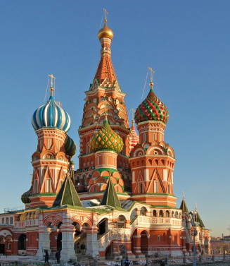 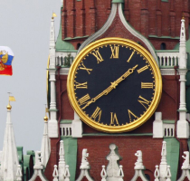 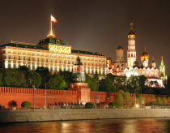 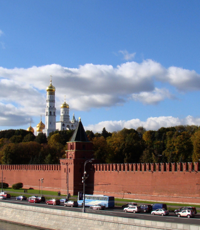 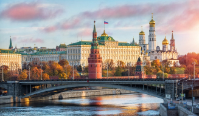 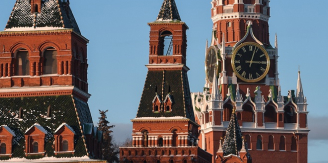Русская ку́хня — традиционная кухня русского народа. Природные особенности мест проживания — обширные леса и долгие зимы — обусловили многие характерные особенности традиционной русской кухни: разнообразие горячих супов и каш, квашений, мочений и солений, грибных блюд и дичи на русском столе. Центральная роль печи в русской избе предопределила важную роль для домашнего хлеба (кислого ржаного), пирогов и пирожков, томлёных[1], тушёных, варёных и печёных блюд. В традиционной русской кухне, в отличие от современной, использовался один из древнейших способов жаренья близкий к фритюру — пряжение (обжаривание в толстом , 1—2 см, слое масла)[2].
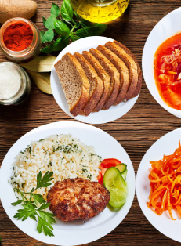 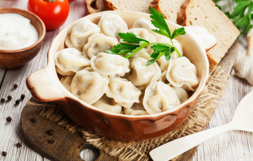 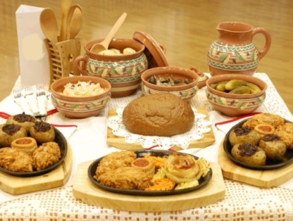 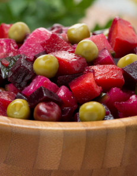 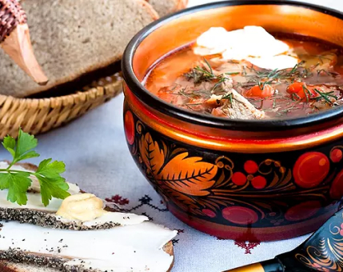 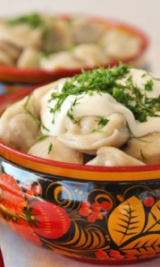 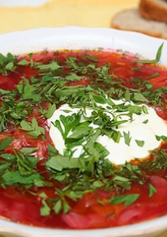